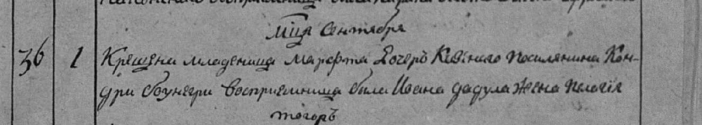
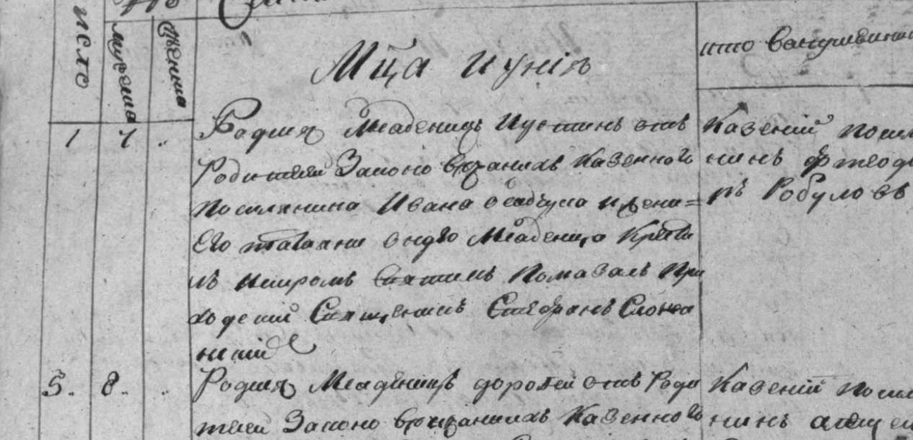
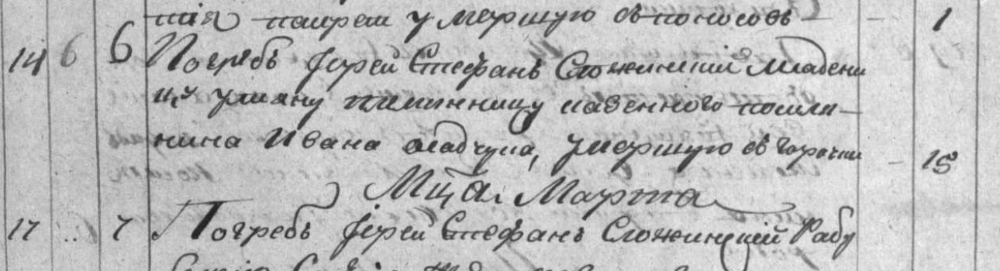
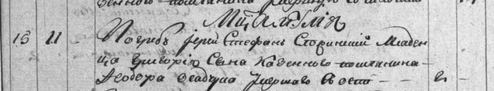
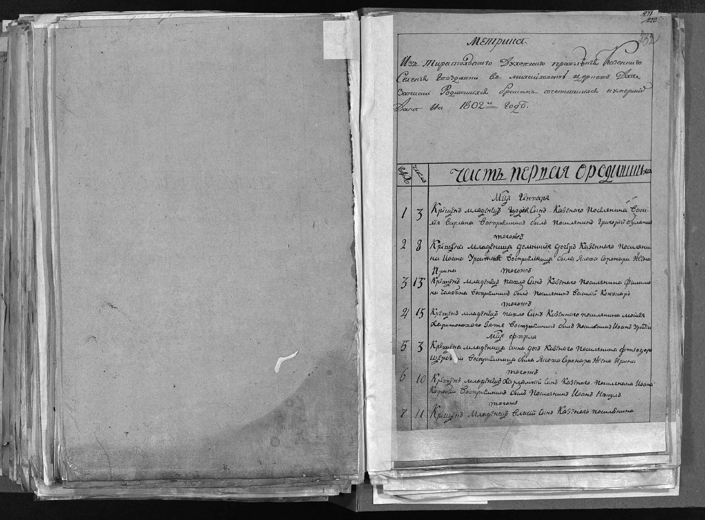
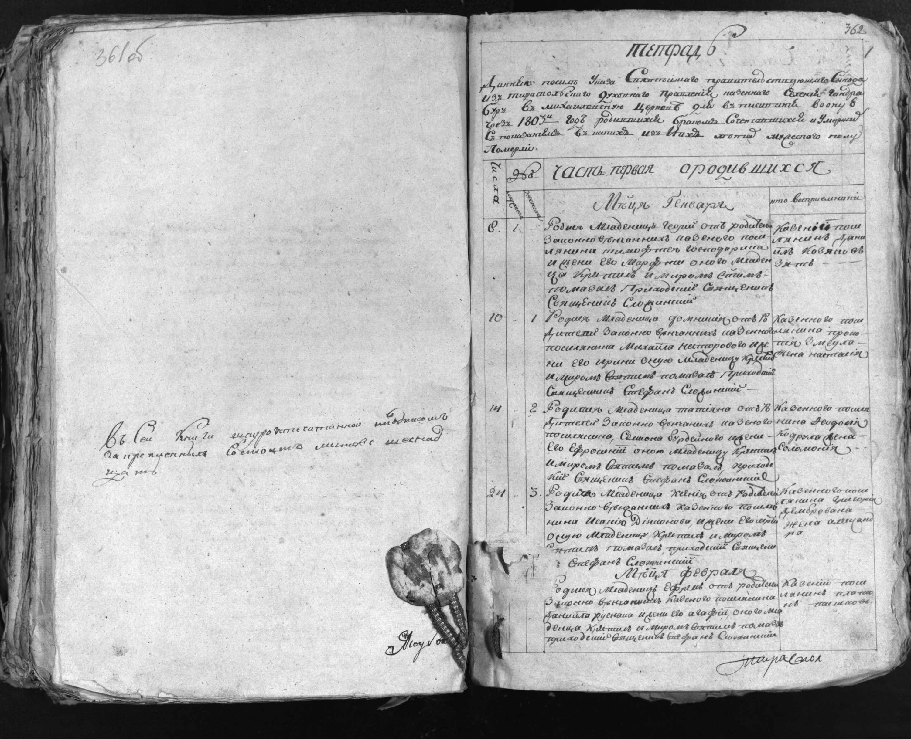

Чотири джерельні зачіпки · перевірено 14 листопада 2026 року
Спорідненість із прямою лінією ще не доведена. Знайдені сімейні зв’язки всередині записів; зв’язок із Лазарем Івановичем Дадулом потребує окремого доказу.
ДАДУЛИ У ГВОЗДАВЦІ ТА ГАНДРАБУРАХ, 1802–1803 Дослідження Codex, 14 листопада 2026 року СТАТУС Чотири знайдені й візуально прочитані записи про носіїв родинного прізвища та їхнє оточення. Зв’язок цих людей із прямою лінією Лазаря Івановича Дадула ще не доведений. Це джерельні зачіпки для перевірки, а не чотири нові доведені родичі. Пошук по текстових файлах репозиторію на коміті 0b5145df4b58ff10a5295733247fee26fcac4e88 не виявив цих записів. Це перевірка опублікованих матеріалів; вона не виключає приватних неопублікованих нотаток Claude. ЯК ЧИТАТИ ПОСИЛАННЯ І ДАТИ Номери PDF-зображень у звіті рахуються від 1 у конкретних файлах Wikimedia Commons. Це НЕ номери кадрів FamilySearch і НЕ номери аркушів. Для 1803 року наведено також видиму рукописну фоліацію. Для наведених дат 1802–1803 років різниця між юліанським і григоріанським календарями становить 12 днів. Тип події збережений: народження, хрещення та поховання не підміняють одне одного. Прізвище в рукописах читаю як «дадула» (Дадул у називному відмінку); це ручне читання, не індекс FamilySearch. Додані повні розвороти й фрагменти дозволяють незалежно звірити почерк. Гандрабури/Гвоздавка тут — місце церковного запису; це не доказ місця народження дорослих.
Хрещення Марфи, у якому Пелагія названа восприємницею: 01.10.1802 ст. ст. / 13.10.1802 н. ст..

«Восприемница была Иоана дадула жена Пелагия».
Запис прямо називає подружжя: Іван Дадул і Пелагія. Пелагія — хрещена мати дитини, а не її рідна мати. По батькові обох, вік і дівоче прізвище Пелагії не наведені. День народження Марфи окремо не зазначений; 1 жовтня — дата хрещення за дієсловом «Крещена».
Це нова згадка дружини Івана в гвоздавському середовищі. Чи був він Іваном Афанасійовичем із ревізії 1795 року, поки невідомо.
Народження Іустина: 01.06.1803 ст. ст. / 13.06.1803 н. ст..

«Родился младенецъ Иустинъ … Казенного Поселянина Ивана дадула и жены его татіаны».
Батьки перебували в законному шлюбі; батько — казенний поселянин Іван Дадул, мати — Тетяна. У записі згадано і хрещення немовляти, але окремої дати хрещення не подано. Тому 1 червня фіксуємо як дату народження; по батькові батьків, їхній вік і дівоче прізвище матері невідомі.
Це документована сім’я Дадулів у книзі Гандрабур. Спорідненість із Лазарем Івановичем Дадулом не доведена. Іустина не можна називати його братом тільки через ім’я батька.
Поховання Уляни: 14.02.1803 ст. ст. / 26.02.1803 н. ст..

«… уляну племянницу казеннаго поселянина Ивана дадула, умершую от горячки».
Уляна названа саме племінницею Івана. У віковій графі — 15 років. Дата смерті окремо не вказана: 14 лютого стосується формули «Погреб». Орієнтовний рік народження — 1787–1788 за записаним віком, із можливою похибкою. Її батьків і власне прізвище запис не називає: не слід автоматично давати їй прізвище дядька.
Це конкретна зачіпка на брата або сестру Івана, але ім’я цього родича ще невідоме. Уляна, похована 1803 року, не може бути Уляною, дочкою Івана Дадула, яка вийшла заміж 1826 року.
Поховання Дмитра: 15.07.1803 ст. ст. / 27.07.1803 н. ст..

«… младенца Димитрія сына Казеннаго поселянина Феодора дадула …».
Батько — казенний поселянин Федір Дадул. У віковій графі Дмитра — 2 роки. Мати не названа. 15 липня — дата поховання, точний день смерті невідомий. Орієнтовний рік народження — 1800–1801 за віком. Причину смерті не нормалізую: у документі скорочене «в осп…».
Федір — ще один дорослий Дадул для зіставлення з ревізіями. Його спорідненість з Іваном, Симоном або Лазарем не встановлена.
ЩО ЦЕ ЗМІНЮЄ В РОБОЧІЙ ВЕРСІЇ У матеріалах Claude є Іван Афанасійович Дадул із ревізії Гвоздівки 1795 року: 40 років, дружина Марія Дем’янова, 30. Новий запис 1802 року називає дружину Івана Дадула Пелагією, а запис Гандрабур 1803 року — Тетяною. Це ще не доказ трьох різних чоловіків: можливі повторні шлюби, зміна місця проживання або похибка запису. Але нові документи роблять автоматичне об’єднання всіх Іванів Дадулів ненадійним. Поки тримаємо три окремі згадки/сімейні групи. Так само не можна автоматично об’єднувати гандрабурського Івана — батька Іустина — з Іваном, дядьком Уляни: у другому записі немає дружини або по батькові. На сайті одночасно є 40-річний Іван 1795 року й 92-річний Іван, померлий 1828 року. Першому в 1828 році було б приблизно 73, а не 92. Різниця істотна і не усувається лише збігом імені. Ревізійний Семіон, 4 роки у 1795-му, мав би близько 20 у 1811-му, тоді як у записі поховання вказано 18. Це менша розбіжність, але також причина зберегти статус версії. Знахідки не спростовують установленого по батькові Лазаря — Іванович. Невирішеним залишається питання, котрий саме Іван був його батьком і хто була його мати. ЩО ВАРТО ЗБЕРЕГТИ У БАЗІ ДОСЛІДЖЕННЯ 1. Іван Дадул × Пелагія: Гвоздавка, згадка 01/13.10.1802 як чоловіка і дружини; Пелагія — хрещена мати Марфи. 2. Іван Дадул × Тетяна → Іустин: народження 01/13.06.1803, книга Гандрабур. 3. Іван Дадул → невстановлений брат/сестра → Уляна: похована 14/26.02.1803, 15 років, книга Гандрабур. Ланка через невідомого брата/сестру — логічне розгортання терміна «племінниця», а не названі в документі батьки. 4. Федір Дадул → Дмитро: похований 15/27.07.1803, 2 роки, книга Гандрабур. Усі групи — окремі кандидати; не під’єднувати їх до прямого дерева до встановлення зв’язку. Не вносити вигаданих дат смерті, шлюбу або народження дорослих. НАСТУПНІ ПЕРЕВІРКИ Найближча перевірка — відшукати хрещення Дмитра в Гандрабурах приблизно 1800–1801 року: воно може назвати його матір. Далі — простежити дітей Івана і Тетяни та згадки Пелагії в сусідніх роках; шукати смерть попередньої дружини або повторний шлюб Івана. Це дозволить перевірити, йдеться про різних чоловіків чи про переміщення однієї сім’ї. Записи Іустина й Уляни дають підставу продовжити Гандрабури, але самі по собі не доводять походження Лазаря звідти. Потрібна сполучна згадка Лазаря, його батьків, братів/сестер або однозначної родинної ролі. ПЕРЕГЛЯНУТО, ЩОБ НЕ ШУКАТИ ПОВТОРНО 1802, ДАОО 37/3/89: Гвоздавка, PDF 248–252, усі три частини. За підсумком 44 народжених (26 хлопців, 18 дівчат), 9 шлюбів, 11 померлих. У народженнях 43 номери через запис двійні. Пелагія — знахідка вище. 1802, та сама справа: Гандрабури, PDF 267–272, усі три частини. 56 народжених, 11 шлюбів, 12 померлих. У PDF аркуші переставлені: після записів народжень № 8–17 одразу № 39–48; № 18–38 містяться на зображеннях 271–272. Не пропускати їх. Нових надійних згадок Дадулів у цьому перегляді не встановлено. 1803, ДАОО 37/3/96: Гвоздавка, PDF 291–295, усі три частини (21 народжений, 7 шлюбів, 20 померлих). Народження Василя Йосиповича Короя не впізнано. Корнилій, син Івана Коробки, — інше прізвище, не Корой. 1803, та сама справа: Гандрабури, PDF 311–319, усі три частини (43 народжених, 8 шлюбів, 38 померлих). Три знахідки наведені вище. Зображення 320 — уже наступна парафія. 1804, ДАОО 37/3/101: Гвоздавка, PDF 352–358, усі три частини (46 народжених, 4 шлюби, 30 померлих). Народження Василя Йосиповича Короя не впізнано. Відома Василиса, дочка Ігната Пачісного і Фекли, не є новою знахідкою. Феодосія, дружина Йосипа Коробки, — не свідчення про Короя. 1809, ДАОО 37/3/130: Гвоздавка, PDF 404–415, усі три частини. За підсумком 62 народжених, 6 шлюбів, 25 померлих. Народження Андрія Кіндратовича Пачесного не впізнано. Гандрабури 1809 року в цьому проході ще не перевірені. 1857, ДАОО 37/3/1256: Гвоздавка, смерті, зображення 469–478 та підсумок 479 (37 померлих). Нових надійних записів для потрібних ліній не встановлено; сумнівні читання Савченко/Спінатій відхилені. Це візуальний пошук за родинними прізвищами, а не повна поіменна транскрипція. «Не впізнано» не означає доведену відсутність людини в усіх джерелах. ДЖЕРЕЛА ДАОО 37/3/89, 1802: https://uk.wikisource.org/wiki/Архів:ДАОО/37/3/89 Повний файл на Commons: https://commons.wikimedia.org/w/index.php?curid=109993337 ДАОО 37/3/96, 1803: https://uk.wikisource.org/wiki/Архів:ДАОО/37/3/96 Повний файл на Commons: https://commons.wikimedia.org/w/index.php?curid=110055302 ДАОО 37/3/101, 1804: https://uk.wikisource.org/wiki/Архів:ДАОО/37/3/101 ДАОО 37/3/130, 1809: https://uk.wikisource.org/wiki/Архів:ДАОО/37/3/130 Календарні перерахунки виконані окремо від транскрипції. Повні розвороти — JPEG-відтворення PDF без зміни змісту, фрагменти — вирізки для читання; оригінальні PDF збережені локально. Маніфест містить походження й контрольні суми.

